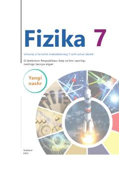

F77-sinf o'quvchilari uchun mo'ljallangan rasmiy fizika darsligi.
Mazkur darslik umumiy o'rta ta'lim maktablarining 7-sinf o'quvchilari uchun mo'ljallangan bo'lib, fizika fanining asosiy tushunchalari, mexanik harakat va issiqlik hodisalarini o'rgatadi. Kitobda nazariy bilimlar amaliy topshiriqlar, laboratoriya ishlari va masalalar yechish orqali mustahkamlab boriladi.